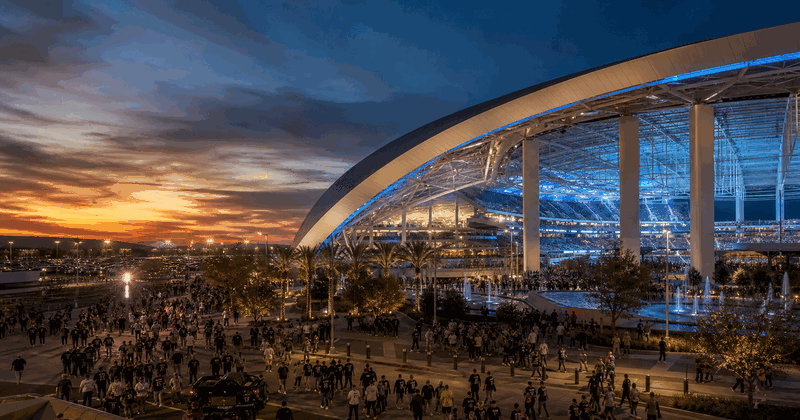
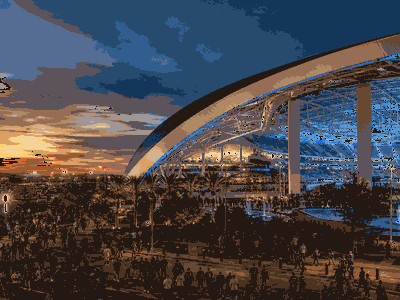

american football event view
Super Bowl
Super Bowl keeps the evergreen overview and current edition details together in this framed event view.
FrequencyRecurring
Current edition2027
Main cityInglewood
FormatNFL championship game
History viewEdition details in one place
Use the year switcher for recent editions. Date, venue, ticket and programme updates stay inside the same event URL.

More American footballInterested in more american football?Explore related events, places and calendar moments.